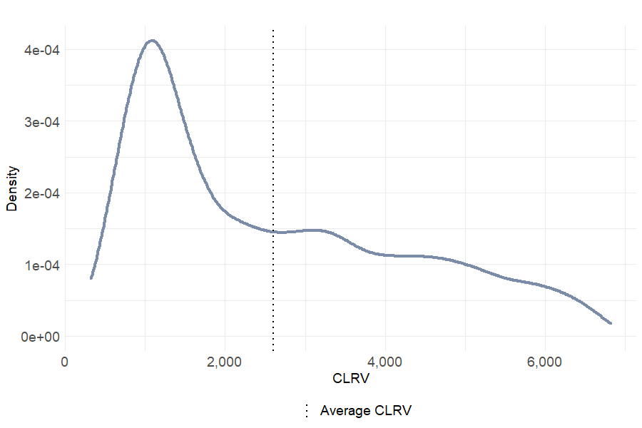
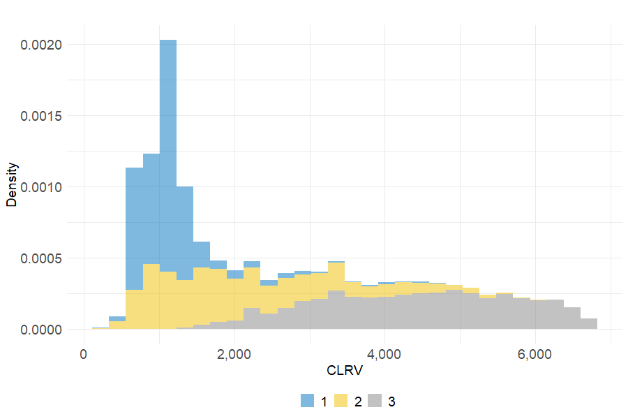
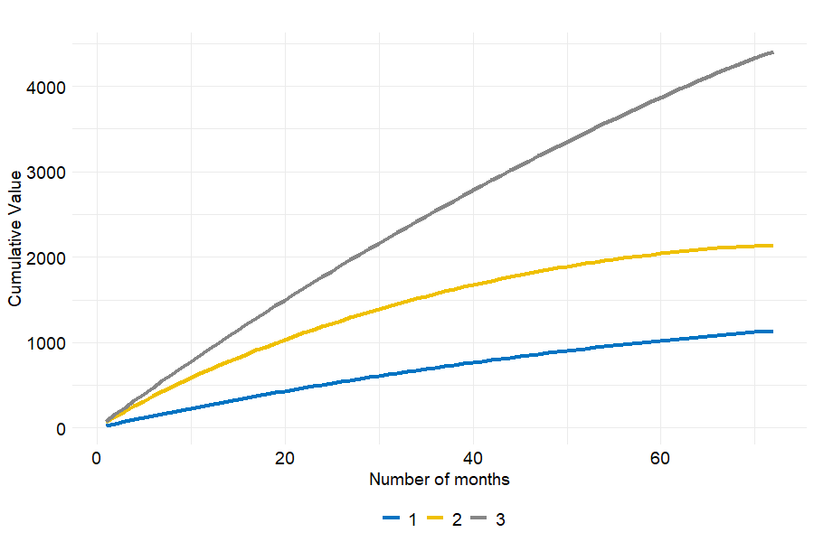

6.4 Portfolio value estimation
In the two previous sections, the portfolio has been partitioned into 3 customer segments and customer lifetime has been estimated by the means of the Cox model. This section’s purpose consists in deriving a method to calculate the overall value of the portfolio through the computation of customer lifetime raw value.
6.4.1 The model
As said in chapter 5, it is decided not to use the CLTV variable to estimate customer lifetime value since no information has been provided on the computation method. Instead, another method is adopted to predict each client’s lifetime value. For this purpose, two inputs are needed namely each customer’s survival function as well as the monthly fees represented by the Monthly_Charges feature. Based on the CLV formulation proposed by Gupta and Lehmann (Gupta and Lehmann 2003), we derive a model aiming at calculating customer lifetime raw value (CLRV) as depicted in equation (6.1).
\[\begin{equation} \text{CLRV}_i = \sum_{t=0}^{T} \frac{p_i \ r_{i,t}}{(1+a)^t} \tag{6.1} \end{equation}\]
with,
- \(p_i\) the monthly fee paid by customer \(i\),
- \(r_{i,t}\) the probability that customer \(i\) be in the portfolio at time \(t\),
- \(a\) the discount factor,
- \(T\) the time horizon.
It may be interesting to note that \(p_i\) is time-invariant and corresponds to Monthly_Charges. \(r_{i,t}\) is computed using the survival function estimated with the Cox model. \(a\) is fixed at 8% and \(T\) equals 72 months which is the longest lifetime in the data.
Summing over the \(N\) CLRVs, one can derive customer raw equity which is the portfolio raw value (V) and may be a good proxy for the firm’s overall revenues.
\[\begin{equation} \text{V} = \sum_{i=1}^{N} \text{CLRV}_i = \sum_{i=1}^{N} \sum_{t=0}^{T} \frac{p_i \ r_{i,t}}{(1+a)^t} \tag{6.2} \end{equation}\]
6.4.2 Customer Lifetime Raw Value
In the literature, it is common place to measure customer lifetime value that is the overall profit brought by a client over her entire lifetime in the portfolio. In our study, the data set used does not provide any information on the costs related to each customer. Consequently, it is decided to evaluate customer value by computing the overall revenues the firm might earn during the relationship with their clients. We name this metric customer lifetime raw value (CLRV) and it is defined in equation (6.1).
The process implemented to compute client \(i\)’s CLRV works as follows:
- Estimate client \(i\)’s survival function over 72 months using the Cox model fitted in section 6.3.1.
- For each month, multiply the value of the survival function by the monthly fee \(p_i\) paid by client \(i\). Then, divide the product by \((1 + a)^t\) where \(t\) is the month’s index and \(a\) the discount factor.
- Take the sum of the \(T\) ratios.
Since the data is made up of more than 7,000 customers and given the CLRV calculation is time consuming, parallelization has been used to calculate every CLRV. Once all the CLRVs are computed, one may take the sum in order to retrieve the portfolio’s global value as well as a 95% confidence interval as shown by table 6.9.
| V lower | V | V upper | |
|---|---|---|---|
| 17,604,144 | 18,270,000 | 19,031,648 |
Going deeper into the statistical analysis of customer lifetime raw value, it can be noticed from table 6.10 and figure 6.10 that the clients are quite heterogeneous. The distribution of CLRV is left-skewed with a median lower than the mean. In addition, the CLRV ranges from 324 to 6815 indicating that each client does not have the same value to the firm.
Figure 6.10: Distribution of Customer Lifetime Raw Value
| Min. | 1st Qu. | Median | Mean | 3rd Qu. | Max. | |
|---|---|---|---|---|---|---|
| 323.99 | 1125.9 | 2104.66 | 2598.12 | 3850.41 | 6815.42 |
Eventually, it seems interesting to visualize the contribution of each month to customer lifetime raw value. Based on figure 6.11, the montlhy contribution decreases as the number of months increases which leads to a concave cumulative value. This result may be explained by the increase in \((1+a)^t\) and the decrease in the survival probability \(r_{i,t}\) as \(t\) increases (see equation (6.1)). In other words, customers bring in more value to the firm at the beginning of the relationship.
Figure 6.11: Monthly contribution and cumulative value depending on the number of months in the portfolio

6.4.3 Cluster contribution to the portfolio value
In section 6.2, 3 clusters of customers have been identified using hierarchical clustering. This being said, it is undoubtedly necessary to calculate the value of each group using the method presented above. The following table depicts each cluster’s CLRV with 95% confidence interval as well as the % proportion in terms of number of clients and % contribution in terms of value. One can notice that the Platinum cluster accounts for more than half the portfolio total value even if it represents barely a third of the number of clients. Besides, Silver customers are the less valuable to the firm as their contribution barely amounts to a 12%. Recall that this group is characterized by a minimum subscription with no internet connection or additional services. Finally, the Gold segment’s contribution is \(\approx\) 40% lower than cluster 3’s. It may be explained by cluster 2 client’s higher propensity to churn.
| Cluster | Proportion (%) | V lower | V | V upper | Contribution (%) |
|---|---|---|---|---|---|
| Silver (1) | 26.6 | 2,035,928 | 2,117,932 | 2,213,746 | 11.59 |
| Gold (2) | 41.4 | 5,760,579 | 6,211,027 | 6,734,243 | 34.00 |
| Platinum (3) | 32.1 | 9,807,637 | 9,941,041 | 10,083,660 | 54.41 |
Once the value differences across clusters identified, let us dig into a more detailed analysis of customer value based on the group they belong to. On figure 6.12, the 3 CLRV distributions indicate large disparities between each client segment. While cluster 1 customers are defined an inflation of values located before 2,000, the two other groups are more homogeneous. The CLRV of cluster 2 (respectively 3) clients seems evenly distributed between 0 (respectively 1,500) and 6,000 (respectively 7,000).
Figure 6.12: Distribution of Customer Lifetime Raw Value per cluster
| Min. | 1st Qu. | Median | Mean | 3rd Qu. | Max. | |
|---|---|---|---|---|---|---|
| Silver (1) | 333.82 | 837.50 | 1094.51 | 1134.40 | 1264.28 | 4679.80 |
| Gold (2) | 323.99 | 1194.59 | 1862.16 | 2134.37 | 2886.02 | 6009.78 |
| Platinum (3) | 1268.74 | 3393.93 | 4489.62 | 4408.44 | 5454.71 | 6815.42 |
When looking at table 6.12, large variations appear between each cluster’s average CLRV. With a view of testing whether these differences are significant, the ANOVA test is performed between the CLRV and cluster variables. The very low p-value depicted in the table below indicates significant different means across the 3 groups. Hence, it can be affirmed that the contribution of each client segment to the portfolio value is statistically different.
| Df | Sum of squares | MSE | F value | P value | |
|---|---|---|---|---|---|
| Cluster | 2 | 12,016,055,579 | 6,008,027,789 | 5,205.39 | 0 |
| Residuals | 7029 | 8,112,831,034 | 1,154,194 |
With the objective of determining how each group’s representative customer differ one from another in terms of CLRV, it seems a good idea to visualize the evolution of their respective cumulative value as the number of months in the portfolio increases. Figure 6.13 shows that the lower value to the firm, the flatter curve. To put it another way, Silver clients’ monthly contribution to CLRV decreases rapidly and becomes constantly low after 30 months. On the contrary, Platinum customers bring in a larger monthly value and the latter decreases to a lesser extent. As for Gold customers, their cumulative value becomes nearly constant from month 40 which may be due to their lower loyalty to the firm.
Figure 6.13: Customer cumulative value through time per cluster
6.4.4 Simulations
The final step in our study aims at simulating different multiple scenarios to determine how customer lifetime raw value and the portfolio value might evolve ceteris paribus. This section is not exhaustive in inasmuch as only a few parameters have been selected to perform the simulations.
Influence of the discount factor on CLRV
In the CLRV formula (equation (6.1)), the discount factor \(a\) plays a central role since it monitors the importance of future values in the customer value. In this context, it is decided to analyse the evolution of both CLRV and portfolio value after a change in \(a\). The simulation results reproduced in table 6.14 lead us to suppose that the portfolio overall value decreases as the discount factor increases. V is indeed reduced by almost 16% when \(a\) goes from 1% to 8%.
| V Lower | V | V upper | |
|---|---|---|---|
| 1% | 20,894,006 | 21,721,297 | 22,674,662 |
| 2% | 20,358,160 | 21,158,861 | 22,080,569 |
| 4% | 19,357,495 | 20,108,832 | 20,971,852 |
| 8% | 17,604,144 | 18,270,000 | 19,031,648 |
The reduction in V after an increase in the discount rate is actually the direct consequence of a decrease in every customer lifetime raw value. The monthly contribution to CLRV being negatively influenced by \(a\) as the number of months \(t\) increases, this phenomenon is all the more pronounced when \(a\) is large. On figure 6.14, one can observe that the higherthe discount factor, the more concave the shape of the cumulative value. In other words the higher the discount factor, the lower gain in CLRV when the number of months is high.
Figure 6.14: Customer Lifetime Raw Value evolution depending on discount rate
Influence of month-to-month contracts on CLRV
While it is obviously doable to simulate new customer lifetime raw values by playing with the model’s parameters, one can also change the values of covariates used to estimate the survival probabilities \(r_{i,t}\). In this part, the analysis is centred on the proportion of month-to-month contracts in the portfolio. The method consists in computing each client’s CLRV and the portfolio value V for proportions of monthly contracts ranging from 10 to 90%. Table 6.15 examines the portfolio value for 4 interesting scenarios and compare them with the actual share of month-to-month contracts in the data. The results are quite counter-intuitive as V is not maximum for a 10% proportion whereas it has been demonstrated in figure 6.7 that clients enrolled in month-to-month contracts are 22 times more prone to churn than those with two-year contracts. Hence one might think that the lower share of those customers, the higher value of the portfolio.
| % month-to-month contracts | V lower | V | V upper |
|---|---|---|---|
| 10% | 22,526,500 | 23,009,290 | 23,535,331 |
| 30% | 24,289,738 | 25,001,468 | 25,801,858 |
| 70% | 19,763,605 | 20,706,782 | 21,796,005 |
| 90% | 18,266,063 | 19,369,938 | 20,646,166 |
| 55.1% (reference) | 17,604,144 | 18,270,000 | 19,031,648 |
The following figure illustrates the CLRV distribution for 4 scenarios depending on the proportion of month-to-month contracts. The results are closer to our expectations than those presented in the previous table since CLRV tends to be higher when there are 10% month-to-month contracts in the portfolio.
Figure 6.15: CLRV distribution depending on the proportion of month-to-month contracts
Ultimately when representing the evolution of customer raw equity, i.e. the portfolio value, according to the share of month-to-month contracts, a decreasing trend is identified which appears to be a rational result.
Figure 6.16: Portfolio estimated value (Customer Raw Equity) depending on the proportion of month-to-month contracts
How to increase Customer Lifetime Raw Value?
At this point of the study, a consistent method to evaluate the firm’s portfolio value through the computation of customer lifetime raw value has been implemented. In section 6.3 it has been shown that customers from the Gold cluster are characterized by a higher churn rate and lower survival probabilities. This lesser loyalty to the firm has a negative impact on the portfolio value. Furthermore, cluster 2 clients amount to 34% in the customer raw equity which proves their strong potential in terms of CLRV. Therefore, a method to increase Gold customers’ lifetime is proposed in this last section. To that end, it is decided to offer additional services for free to every cluster 2 client. These services are represented by the following variables: Online_Security, Online_Backup and Tech_Support. The underlying purpose is to increase the survival probabilities estimated by the Cox model as it has been proved that they have a negative impact on the churn hazard (see figure 6.7).
The results presented in the table below support our hypothesis since the Gold cluster total value increases by almost 50% after having provided the clients with free additional options.
| Cluster 2 Value | % Variation | |
|---|---|---|
| Reference | 6,211,027 | 0.00 |
| With additional options | 9,218,937 | 48.43 |
Figure 6.17 illustrates the mechanism that leads to an increase in the portfolio value after the “gift” to cluster 2 clients. One can notice a significant shift to the right of the CLRV distribution. This shift is the consequence of an increase in \(r_{i,t}\) - client \(i\)’s survival probability at time \(t\) - which is a positive driver of customer value. We are thus able to propose a marketing strategy which aims at boosting the firm’s lifetime revenues. Note, however, that our methodology does not take costs into account which implies that the highlighted points should be mitigated.
Figure 6.17: Increase in cluster 2 clients’ CLRV after after having provided them with additional services